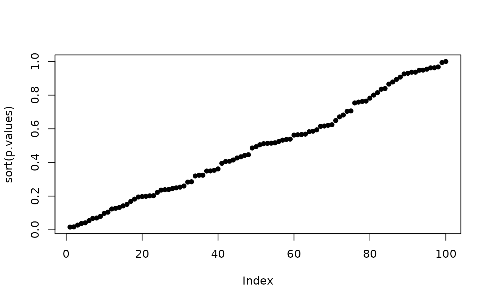

Bartlett's goodness-of-fit test for exponential distribution
Arguments
- x
-
Sample with positive values.
Value
A list with elements
- statistic
-
Statistic.
- p.value
-
Critical value.
References
See
Yagouti A., Abi-Zeid I., Ouarda, T.B.M.J. and B. Bobée
(2001), Revue de processus ponctuels et synthèse de
tests statistiques pour le choix d'un type de processus Revue
des Sciences de l'Eau, 1, pp. 323-361.
See also
Among other goodness-of-fit tests ks.test in the
stats package. See expplot for a graphical
diagnostic.
Examples
## a sample of size 30
x <- rexp(30)
res <- gofExp.test(x)
## ns samples: p.values should look as uniform on (0, 1)
ns <- 100
xmat <- matrix(rexp(30*ns), nrow = ns, ncol = 30)
p.values <- apply(xmat, 1, function(x) gofExp.test(x)$p.value)
plot(sort(p.values), type = "p", pch = 16)
